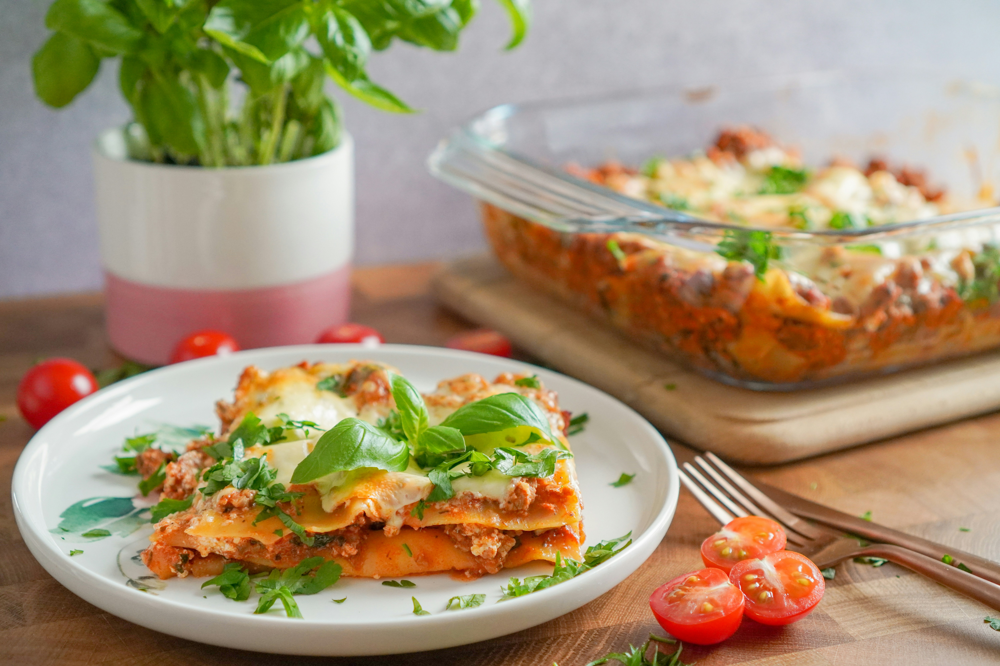

Recipe: Lasagna

Description
Layers of pasta sheets, rich meat sauce, creamy and melted cheese, baked
to perfection.
Ingredients:
- Pasta sheets
- Ground beef
- Onion
- Garlic
- Ricotta cheese
- Mozarella cheese
- Parmezan cheese
- Tomato sauce
- Italian spices
Step-by-Step
- Prepare the Meat sauce
- brown the ground beef with onion and garlic
-
add crushed tomatoes, tomato sauce, and seasonings like basic,
oregano, salt
- Make cheese filling
- mix ricotta cheese with egg, salt, and pepper
- optionally, add additional spice to your taste
- Layer the lasagna
- start with a layer of meat sauce
- add a layer of cooked lasagna sheets
- spread ricotta mixture over sheets
- sprinkle mozzarella and parmesan cheese
- repeat layers
- Bake
- cover with foil and bake until bubbly
- remove foil and bake until cheese is golden brown
- Rest and Serve
- let rest before slicing
- serve with a sprinkle of fresh herbs